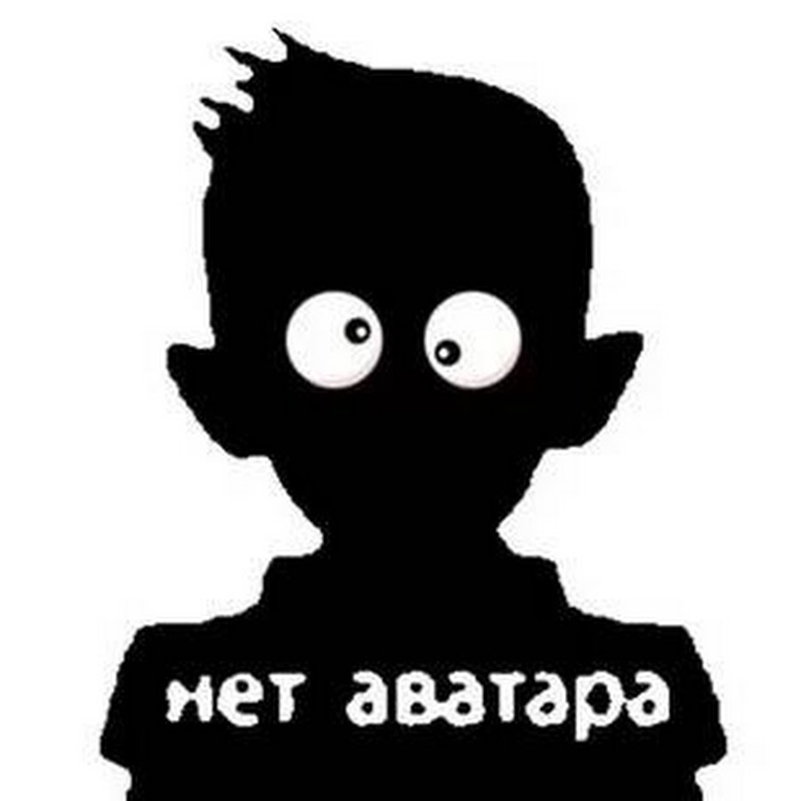

Европейский сарган (или обыкновенный сарган, или морская щука) — вид лучепёрых рыб семейства саргановых.
Совершает сезонные миграции. Весной взрослые особи подходят ближе к берегу для размножения, а зимой перемещаются в открытое море.

На полях Вечной бойни, далеко на юге от Квойджа, тучная фигура упорно трудится под покровом ночи — убирает, а затем расчленяет, потрошит, сгружает в кучи конечности и внутренние органы павших. И все это лишь для того, чтобы на следующее утро бойня могла повториться. В том проклятом мире ничто не разлагается само по себе — мертвецам никогда не суждено вернуться обратно в землю, и не важно, насколько глубока могила.